Most recent recipes
Lemongrass and pineapple beef vermicelli salad
50 mins
Serves 4
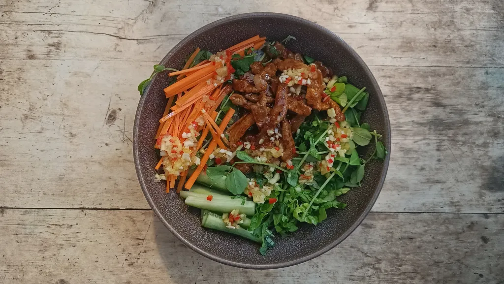
Pineapple fish sauce
30 mins
Yields 200 ml
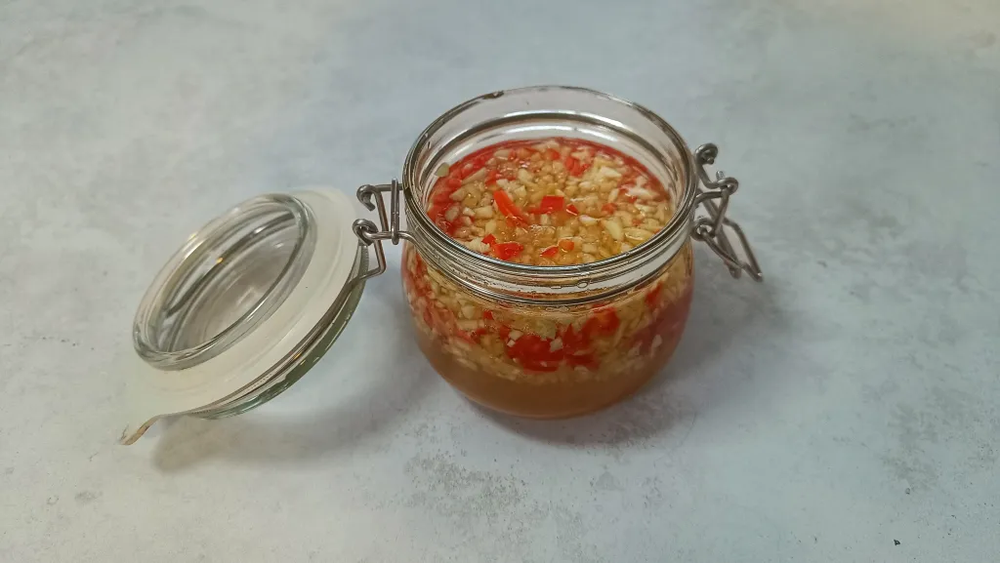
Steamed cod fillet with prawns
45 mins
Serves 4
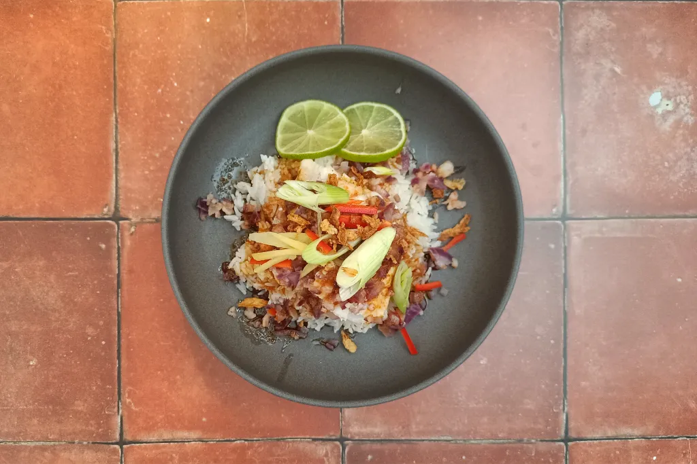
Pork and purple broccoli udon
30 mins
Serves 3
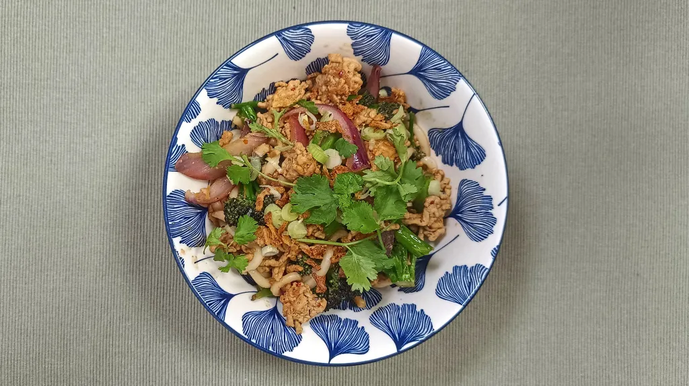
Sticky salmon fillet in a ginger soy glaze
40 mins
Serves 2
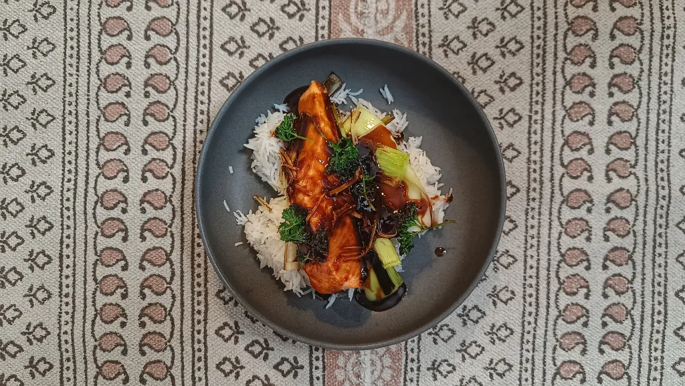
Jammy sweet pepper & chorizo rice
1 hr 5 mins
Serves 4
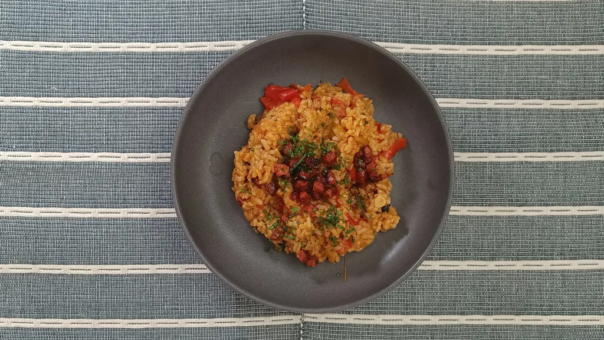
Tandoori chicken chaat
33 mins
Serves 4-6
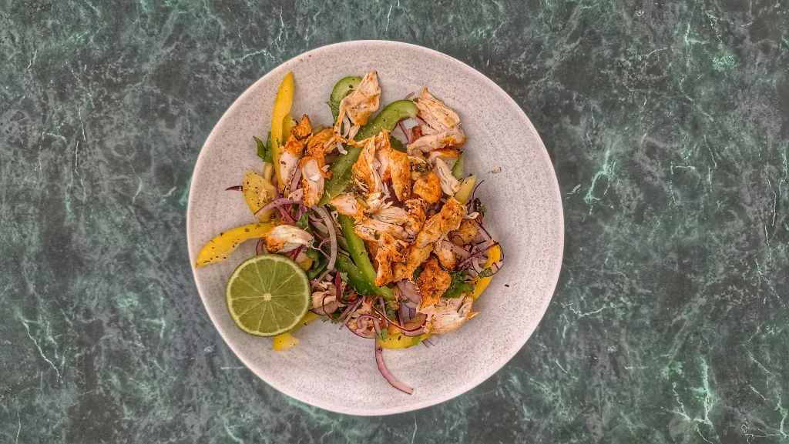
Potato rösti with smoked ham and eggs
48 mins
Serves 4
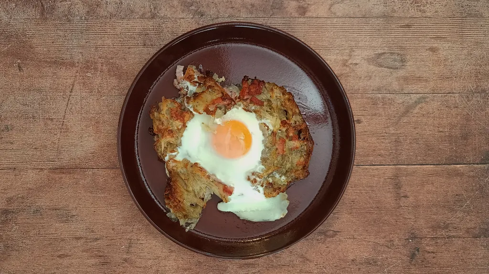
Frosted lemon-lime sugar cookie bars
46 mins
Serves 16
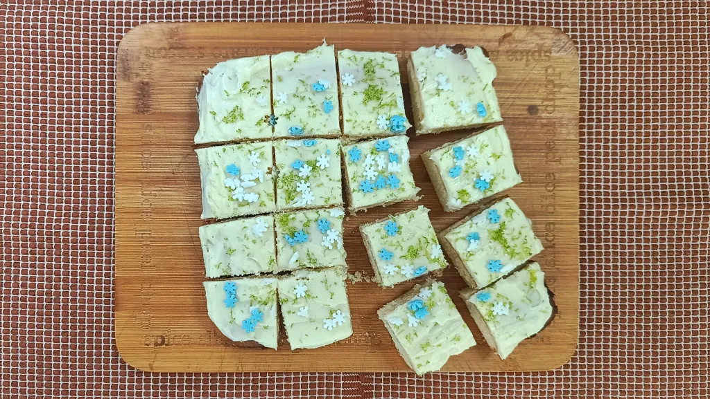
Blackened chicken with caramel and clementine dressing
1 hr 5 mins
Serves 4
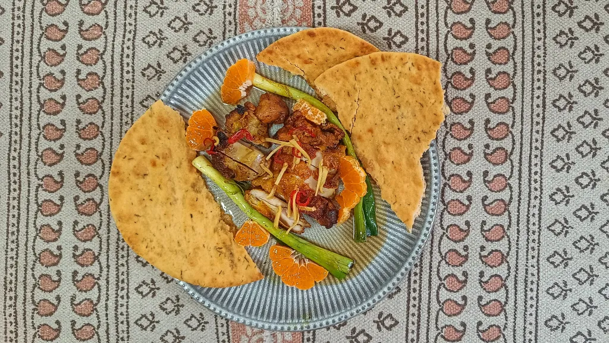
Braised lentils with cheesy dumplings
1 hr 20 mins
Serves 4
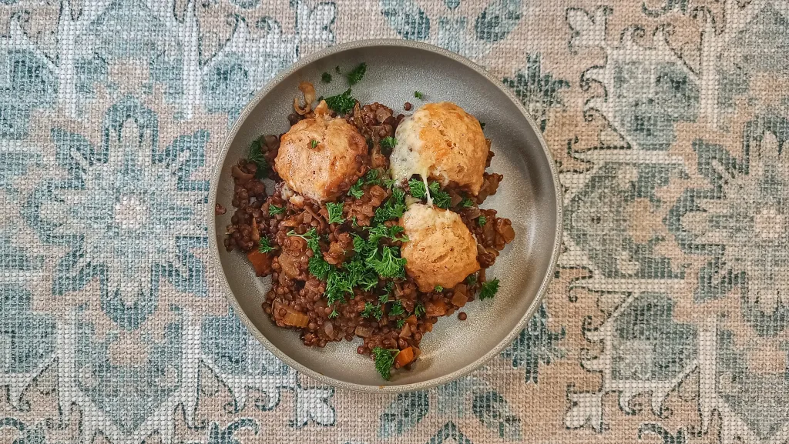
Sweet and savoury chicken pie with cinnamon almonds
2 hr 5 mins
Serves 4
Pulled jerk BBQ sliders
1 hr 5 mins
Serves 3
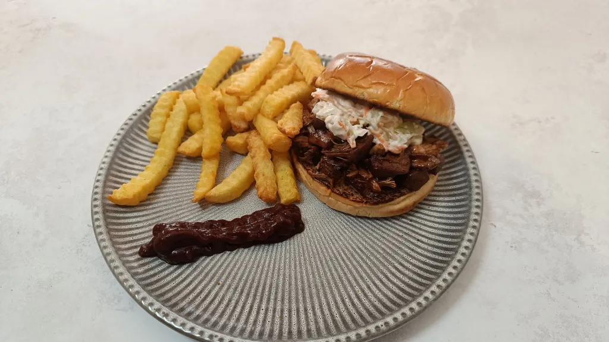
Bò Kho-style steak and lemongrass pie
3 hr 20 mins
Serves 6
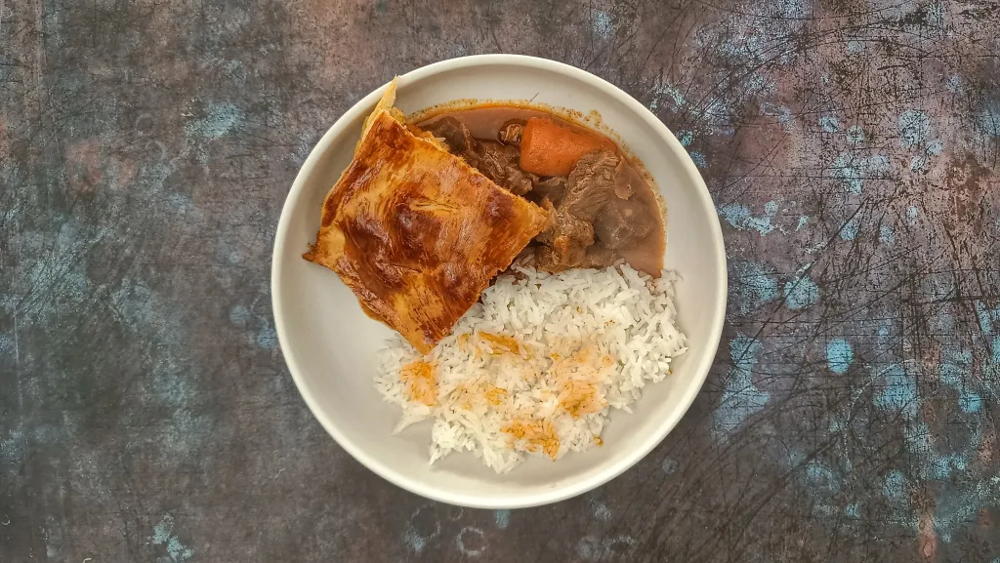
Green Thai salmon parcels
22 mins
Serves 2
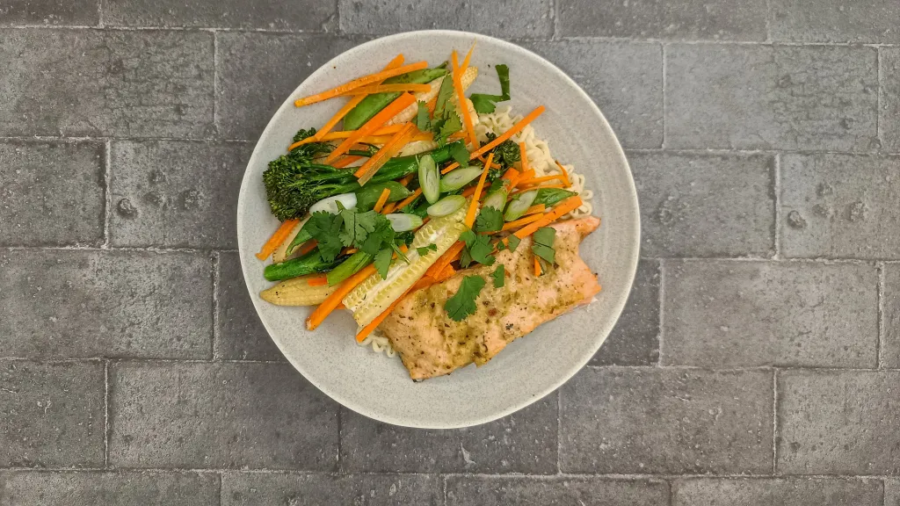